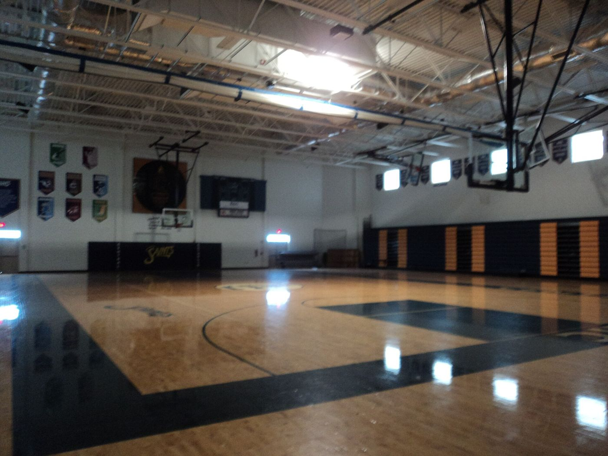
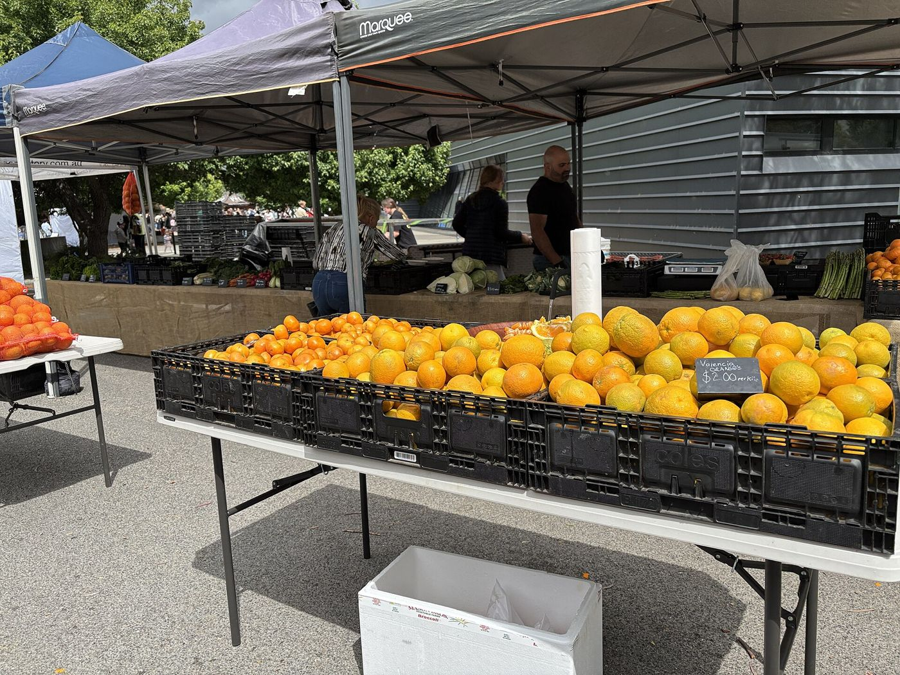
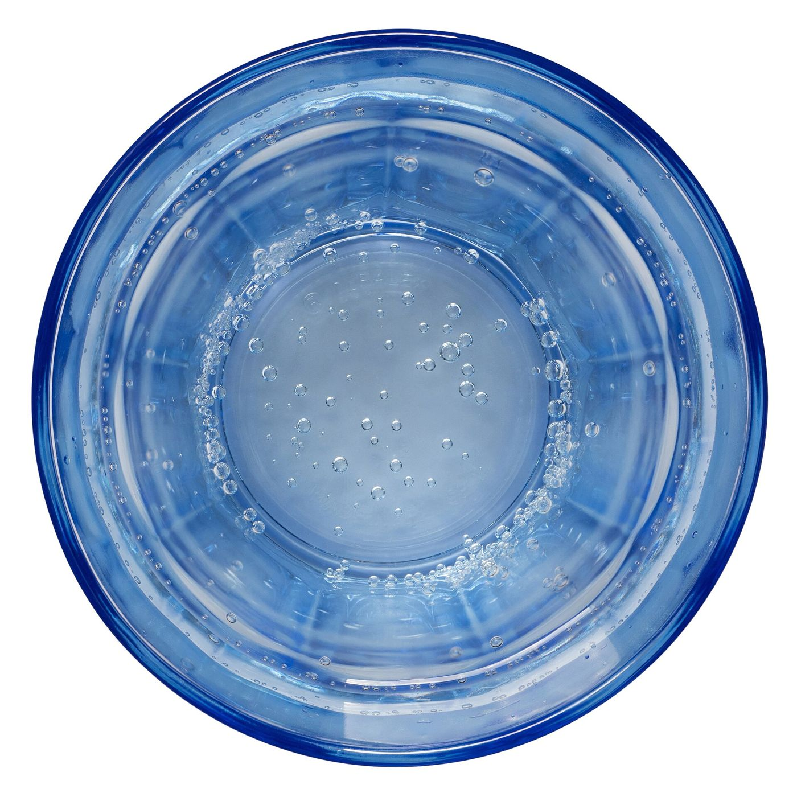

Ore 10:05, palestra.
Il riscaldamento è finito. Uno studente apre lo zaino: una barretta «proteica», una bevanda «energetica», lo smartphone.
«Prof, ho chiesto all'IA quanto devo correre per smaltire la barretta. Dice due ore.»
Due ore? Con i dati del Compendium of Physical Activities, per un adulto di 70 kg che corre a 10 km/h sono circa 14 minuti. Ma il punto non è il numero. Il punto è che una risposta sicura e sbagliata è arrivata in tre secondi, e che il cibo non è un debito da saldare con la corsa.
Ogni giorno i nostri studenti chiedono all'IA diete, schede di allenamento, integratori. Chi li aiuta a distinguere un dato da una frase convincente? Molto spesso siete voi: il docente di scienze motorie è il primo educatore alla salute che i ragazzi incontrano in movimento.

Il cibo è un dato
Leggere l'etichetta di una barretta sportiva come uno scienziato: porzioni, energia, fibre, la regola europea. E scoprire dove l'IA sbaglia.
Il movimento è un dato
MET, intensità, energia spesa: costruire con l'IA un piccolo simulatore da usare in classe, e dimostrare con i test che funziona.

La salute non è un calcolo
Valori di popolazione, nessuna dieta, nessun senso di colpa. L'IA è uno strumento per il docente, non un allenatore per gli studenti.
Perché proprio scienze motorie
Le Indicazioni nazionali per i licei (D.I. 211/2010) affidano alle scienze motorie e sportive il nucleo «Salute, benessere, sicurezza e prevenzione», che comprende i principi di una corretta alimentazione e di uno stile di vita attivo. Alimentazione ed energia del movimento sono quindi temi vostri, e l'IA è già nelle tasche dei vostri studenti.
Non serve saper programmare
Si lavora in coppia, con prompt pronti da copiare. Il simulatore si costruisce descrivendolo a parole all'IA; chi si blocca usa quello già pronto e svolge comunque test e progettazione didattica. Nessun prerequisito informatico.
Le lezioni scorrono nelle slide; qui si lavora
- Seguite le slide: contengono spiegazioni, vignette, domande lampo, timer e il FoodLab dal vivo.
- Lavorate qui, in «Prompt e schede»: copiate i prompt, compilate le schede e prendete appunti.
- Prima di uscire esportate gli elaborati e caricateli nella cartella di consegna.
Tutto resta nel browser del vostro computer: nessun dato viene inviato al server.
Lezione 1 · 24 novembre
Slide della lezione →Etichette A e BProdotti fittizi per il Laboratorio 1 · la B è una barretta proteica
Valori costruiti per l'esercizio e coerenti con l'allegato XIV del Reg. (UE) 1169/2011. Si possono affiancare a etichette reali.
Etichetta A · Cracker integrali
Ingredienti: farina integrale di frumento 70%, olio di girasole, farina di segale, sale, agenti lievitanti. Contiene glutine. Porzione: 30 g (circa 6 cracker).
| Dichiarazione nutrizionale | per 100 g | per porzione (30 g) |
|---|---|---|
| Energia | 1817 kJ / 432 kcal | 545 kJ / 130 kcal |
| Grassi | 12 g | 3,6 g |
| di cui acidi grassi saturi | 1,5 g | 0,5 g |
| Carboidrati | 66 g | 19,8 g |
| di cui zuccheri | 3,0 g | 0,9 g |
| Fibre | 8,0 g | 2,4 g |
| Proteine | 11 g | 3,3 g |
| Sale | 1,6 g | 0,48 g |
Una porzione apporta il 6,5% dell'assunzione di riferimento di un adulto medio (8400 kJ / 2000 kcal).
Etichetta B · Barretta proteica senza zuccheri aggiunti
Ingredienti: proteine del latte, maltitolo, burro di cacao, fibra di cicoria, cacao magro, emulsionante: lecitina di soia. Contiene latte e soia. Un consumo eccessivo può avere effetti lassativi. Porzione: 1 barretta (40 g).
| Dichiarazione nutrizionale | per 100 g | per barretta (40 g) |
|---|---|---|
| Energia | 1651 kJ / 395 kcal | 660 kJ / 158 kcal |
| Grassi | 15 g | 6,0 g |
| di cui acidi grassi saturi | 7,0 g | 2,8 g |
| Carboidrati | 38 g | 15,2 g |
| di cui zuccheri | 4,0 g | 1,6 g |
| di cui polioli | 20 g | 8,0 g |
| Fibre | 10 g | 4,0 g |
| Proteine | 30 g | 12 g |
| Sale | 0,50 g | 0,20 g |
Una barretta apporta il 7,9% dell'assunzione di riferimento di un adulto medio (8400 kJ / 2000 kcal).
Laboratorio 1 · L'IA legge davvero l'etichetta?Prompt 1 · Scheda 1 · 15:20–16:00
Confronto di etichette e provenienza dei dati
Biologia e metabolismo · revisione criticaPrompt 2 · 16:30–16:50
Laboratorio 2 · attività investigativaPrompt 3 o 3-bis per scienze motorie · Scheda 2 · 16:50–17:45
Variante per scienze motorie · prompt 3-bis
Intensità dell'esercizio, frequenza cardiaca e scala di Borg: un'attività da svolgere davvero in palestra.
Revisione dell'attività investigativa
Punteggio: 0 = assente o scorretto · 1 = parziale · 2 = pienamente soddisfatto. Totale: 0/12.
Lezione 2 · 15 dicembre
Slide della lezione →Costruzione del simulatorePrompt 4 · requisiti e versioni · 14:20–15:50
Validazione e correzioneScheda 3 · prompt 5 · 16:00–17:10
Matrice dei test del simulatore
I valori attesi sono calcolati con i coefficienti dell'allegato XIV. Le righe «4–4–9» valgono per il modello semplificato; le altre per la modalità con coefficienti UE.
Microattività e consegna finalePrompt 6 · 17:10–17:35
FoodLab · Simulatore energetico
Imposta le masse dei componenti di una porzione ipotetica e osserva come varia l'energia calcolata. Puoi passare dal modello semplificato 4–4–9 ai coefficienti dell'allegato XIV del Reg. (UE) 1169/2011, usati per le etichette.
300 kcal
kcal/min = MET × 3,5 × massa / 200. Valori lordi, per adulti. Serve a capire l'energia, non a «compensare» il cibo.
Limiti del modello
I cursori sono indipendenti: la loro somma non rappresenta necessariamente 100 g di alimento. Il modello 4–4–9 trascura fibre, polioli, alcol e acidi organici, per cui può differire dai valori di etichetta. La percentuale sull'assunzione di riferimento (2000 kcal, adulto medio) è un valore di popolazione e non un fabbisogno individuale. Il simulatore non fornisce indicazioni sanitarie. Il pannello «Energia in movimento» usa valori MET medi per adulti: la spesa reale varia con età, allenamento, tecnica e condizioni.
Test di validazione
| Modello | C (g) | P (g) | G (g) | Fibre (g) | Polioli (g) | Energia attesa |
|---|
Nella modalità UE, «C» indica i carboidrati esclusi i polioli: per l'etichetta B si inseriscono 38 − 20 = 18 g.
Tredici casi applicativi
Rispondi ai quesiti per verificare le conoscenze acquisite. Al termine riceverai il punteggio e suggerimenti sulle risposte da rivedere, senza visualizzare direttamente quelle corrette. Obiettivo formativo: almeno il 70% di risposte corrette.
Rubrica di valutazione del prodotto finale
Da applicare al simulatore e alla microattività, in autovalutazione o tra pari. 0 = assente o scorretto · 1 = parziale · 2 = pienamente soddisfatto.
Totale: 0/10
Fonti e risorse
Fonti per la verifica
Regolamento (UE) n. 1169/2011 sulla fornitura di informazioni sugli alimenti ai consumatori: testo su EUR-Lex. Punti utili: art. 31 (calcolo dell'energia), allegato I (definizioni di fibre, sale, proteine), allegato XIII parte B (assunzioni di riferimento: 8400 kJ / 2000 kcal), allegato XIV (coefficienti di conversione).
CREA – Tabelle di composizione degli alimenti: banca dati AlimentiNUTrizione, per confrontare un'etichetta con i valori medi di un alimento.
CREA – Linee guida per una sana alimentazione (2018): presentazione su EpiCentro (ISS), riferimento per l'aggancio all'educazione alla salute.
SINU – LARN, V revisione (2024): sinu.it, livelli di assunzione di riferimento per la popolazione italiana.
EFSA – DRV Finder: strumento interattivo dei valori dietetici di riferimento; portale EFSA.
2024 Adult Compendium of Physical Activities (Herrmann et al., J Sport Health Sci 2024;13(1):6-12): pacompendium.com, valori MET delle attività; articolo open access.
Indicazioni nazionali per i licei (D.I. 211/2010), scienze motorie e sportive: nucleo «Salute, benessere, sicurezza e prevenzione».
AI Act, articolo 4: alfabetizzazione in materia di IA.
Le risposte dell'IA non costituiscono prove sperimentali. Verificare ingredienti, allergeni, unità e dati nutritivi su etichette e fonti ufficiali. Non inserire dati personali o sensibili nei prompt, in particolare dati sanitari degli studenti.
Quale fonte per quale consegnaTabella di riferimento
| Consegna | Fonte principale | Che cosa verificare |
|---|---|---|
| Laboratorio 1 · etichette | Etichetta originale; Reg. 1169/2011, allegati I e XIV | Base 100 g o porzione, coefficienti, sale/sodio, polioli inclusi nei carboidrati |
| Laboratorio 1 · confronto con alimento medio | Tabelle CREA | Ordine di grandezza dei macronutrienti |
| Biologia e metabolismo | Libro di testo di biochimica/fisiologia in adozione o universitario | Enzimi, sedi, prodotti, assorbimento |
| Laboratorio 2 · aggancio salute | Linee guida CREA 2018; LARN SINU | Messaggi di popolazione, assenza di indicazioni individuali |
| Energia in movimento | 2024 Adult Compendium of Physical Activities | Codice e valore MET dell'attività, popolazione di riferimento |
| FoodLab e microattività | Reg. 1169/2011, allegati XIII e XIV | Formule, kJ calcolati con i coefficienti in kJ, assunzione di riferimento |
Checklist per l'uso in classeSette controlli prima di proporre un'attività
Crediti fotograficiFoto da Wikimedia Commons con licenze libere
Le foto provengono da Wikimedia Commons con licenze libere che ne consentono il riuso con attribuzione. Le illustrazioni, le vignette e le infografiche sono originali del corso.
- Pista di atletica (testata): «Athletics track start line numbers 1, 2, 3.jpg», di Santeri Viinamäki, Wikimedia Commons, licenza CC BY-SA 4.0, ridimensionata.
- Atleta in partenza: «Man running track and field.jpg», di ThoroughlyReviewed, Wikimedia Commons, licenza CC BY 2.0, ridimensionata.
- Palestra scolastica: «Central Catholic High School gymnasium, Bloomington Illinois.JPG», di EyeTripleE, Wikimedia Commons, licenza CC0.
- Banco di frutta e verdura: «Fruit and vegetable stall at Southside Farmers Market November 2025.jpg», di Nick-D, Wikimedia Commons, licenza CC BY-SA 4.0, ridimensionata.
- Bicchiere d'acqua: «Blue glass with carbonated water.jpg», di W.carter, Wikimedia Commons, licenza CC0.